Project Overview
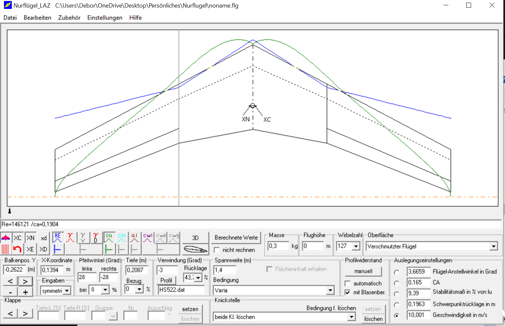
Airplane Plan
Since I am opting for an airplane as a building block, or at least the fuselage. I reused a plane I already designed in the past and used that as a blue print. In the past I made it out of EPP, but underdetermined the stability. So this time I wanted to make it out of balsa wood.
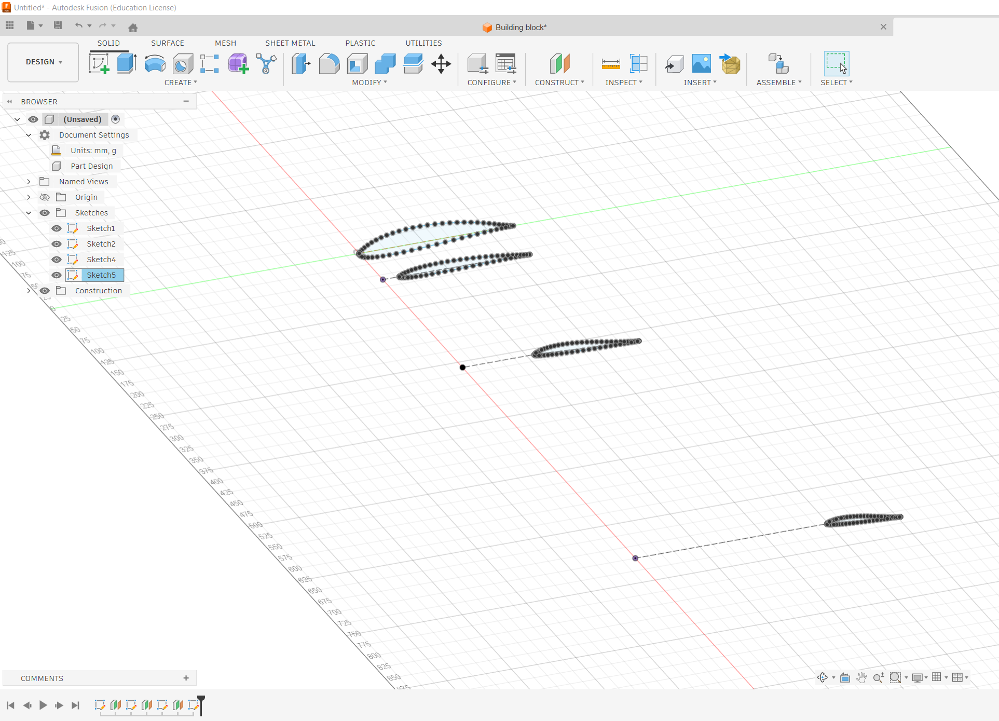
Getting ready for CAD
I took the measurements of the plane and made a sketch in CAD, there was a really neat plugin which allowed for the .DAT files to be imported which saved me a ton of time.
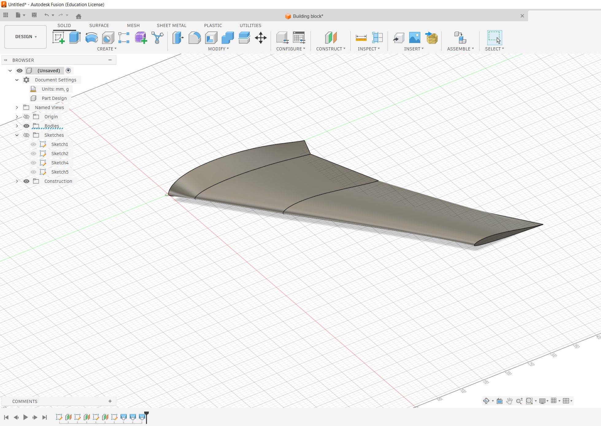
Wing
After importing the .Dat files I lofted the sketches to get my left wing.
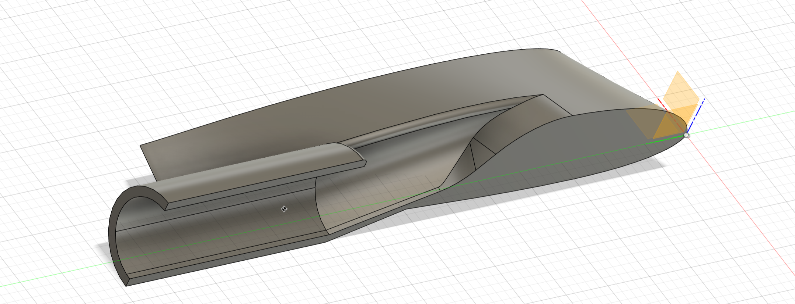
Fuselage
Since I wanted to get about 1.5kg of thrust I either needed a large propeller or a small one with more blades yet smaller in diameter with a higher pitch. Neither of the options were available so I opted to something with I had no experience with. An EDF, literally a jet engine for model planes. I had to design the fuselage around the EDF and make sure it had enough space for the battery and the ESC. Usually one places the battery in the nose of the plane but I don't have the space, so I will cut up the battery, and put two cells in the right and left side of the plane.
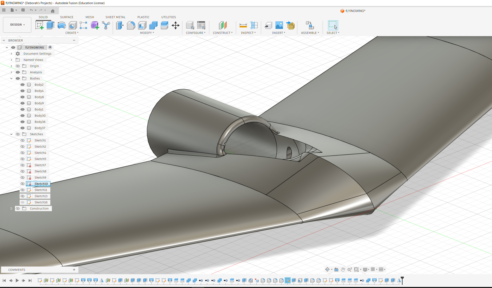
Combined wings and fuselage
After I had the wings and the fuselage I combined them to make sure they fit together for the connection of plane and wings, I had a carbon rod, and some plugs, I also integrated a hole for the servos to be able to control the elevons.
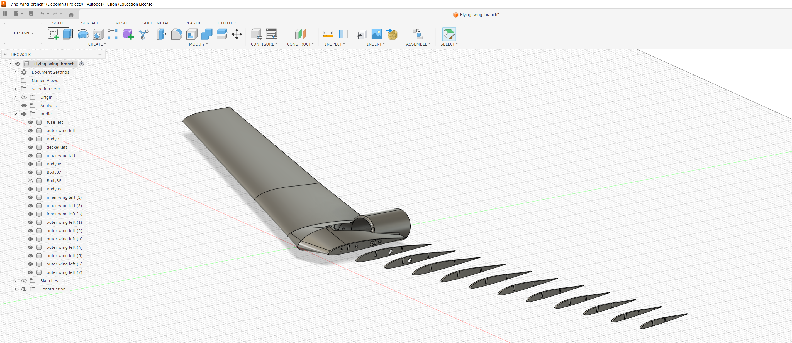
Making it manufacturable
I designed ribs for the wings, which I would then cut out of balsa on the laser cutter on the design lab. I needed to calculate the beam stiffness of the wing to make sure it would be able to withstand the forces of flight, and I also needed to make sure the ribs were close enough together to prevent the skin from buckling. I also added some holes in the ribs to save weight and make it easier to glue the skin on.
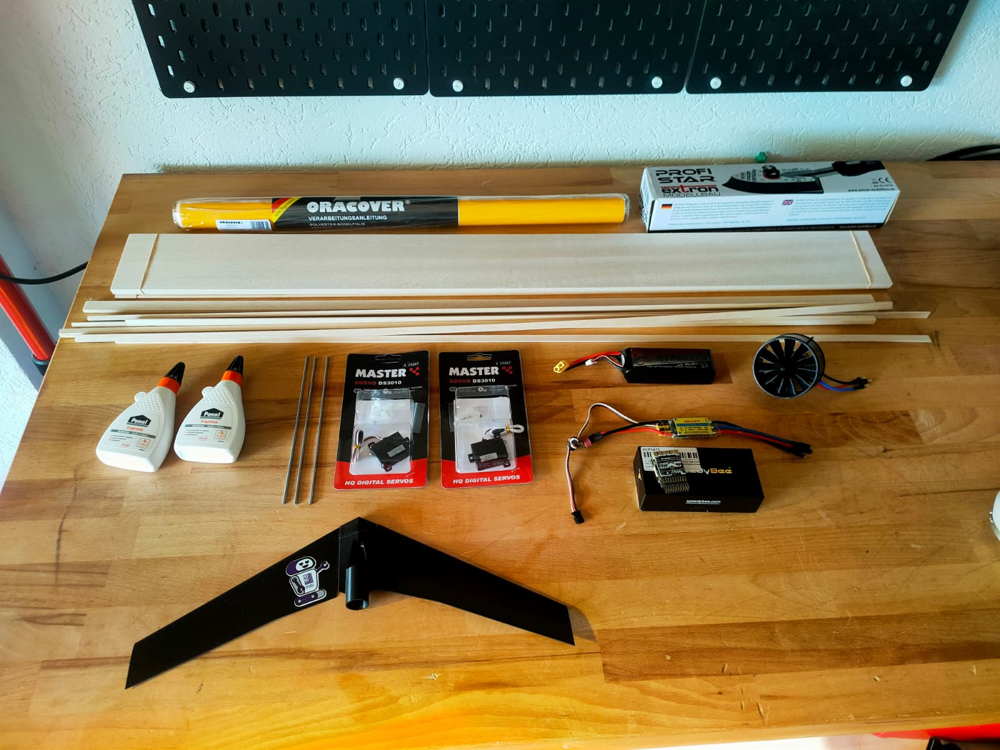
Used material
It took some time to accumulate all materials, I had to get balsa wood, which was quite hard to get, a 40AMP Esc, 2 Servos, some cover foil, the EDF and a small iron to apply the foil.
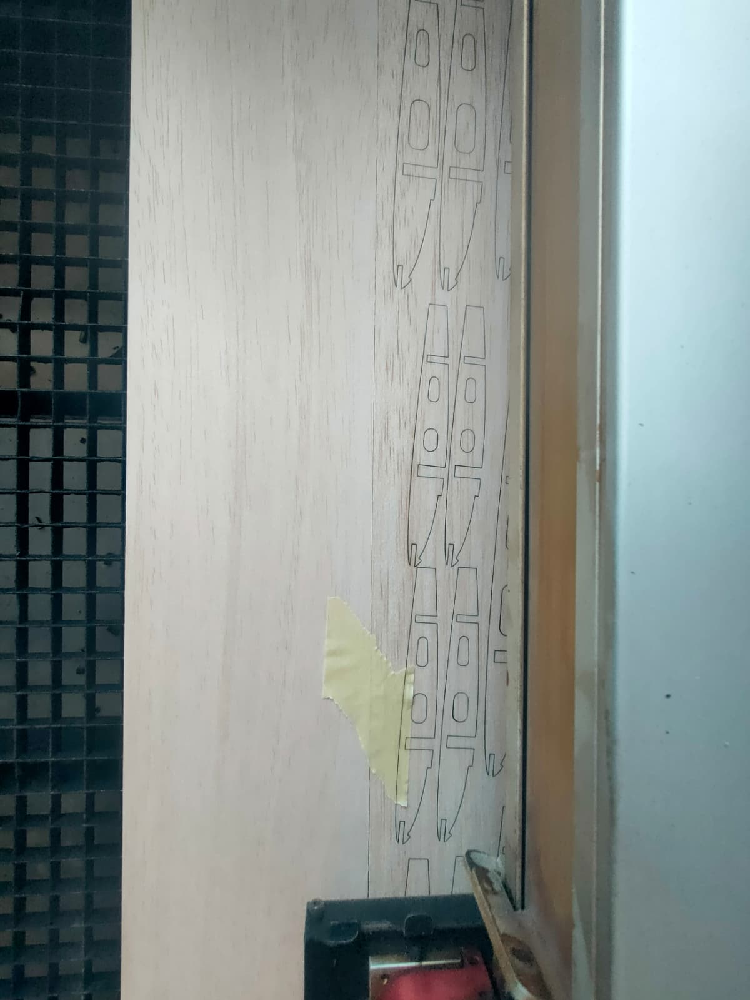
Lasercutting
I went to the design lab and and cut the ribs on the lasercutter there.
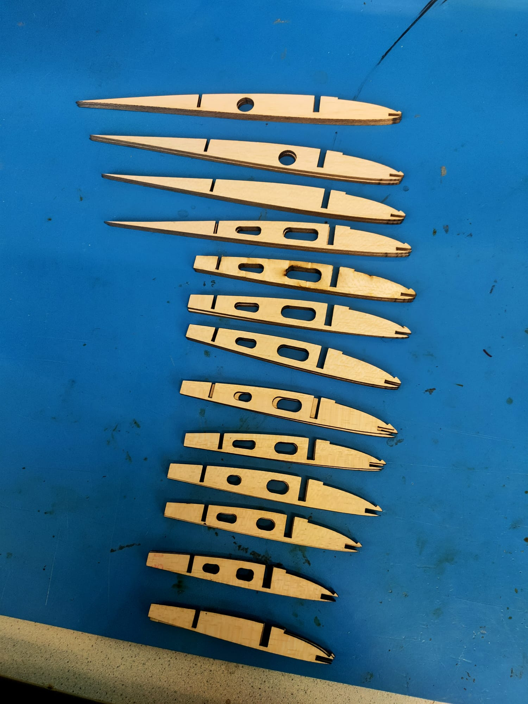
Glueing
After the cut, the ribts looked super clean and were ready for glueing and sanding.
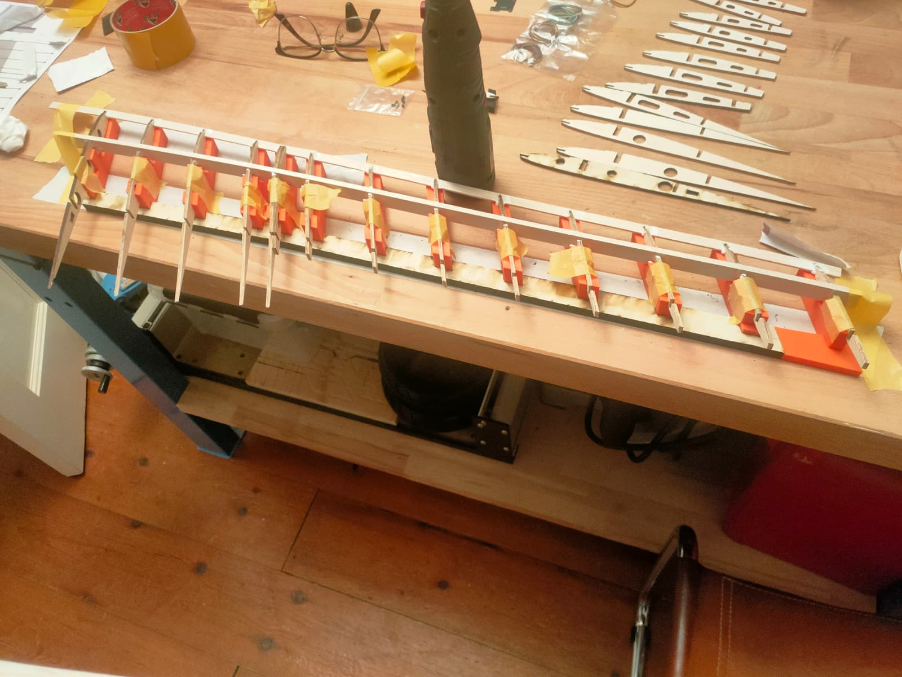
3d printed holders for glueing
To glue the ribs in the right position I had to make some 3D printed holders for the ribs, they had to be made out of another material than wood, since when using wood glue if I made the holder out of wood it would have stuck to the ribs, the holders those were embedded in a piece of wood to fix the position.
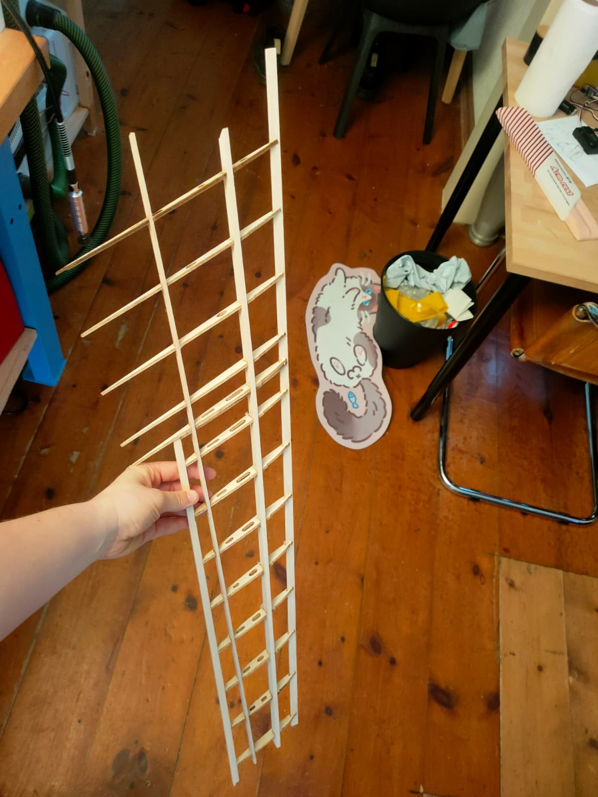
Sanding
After glueing the ribs I had to sand them to make sure they were smooth and ready for the skin.
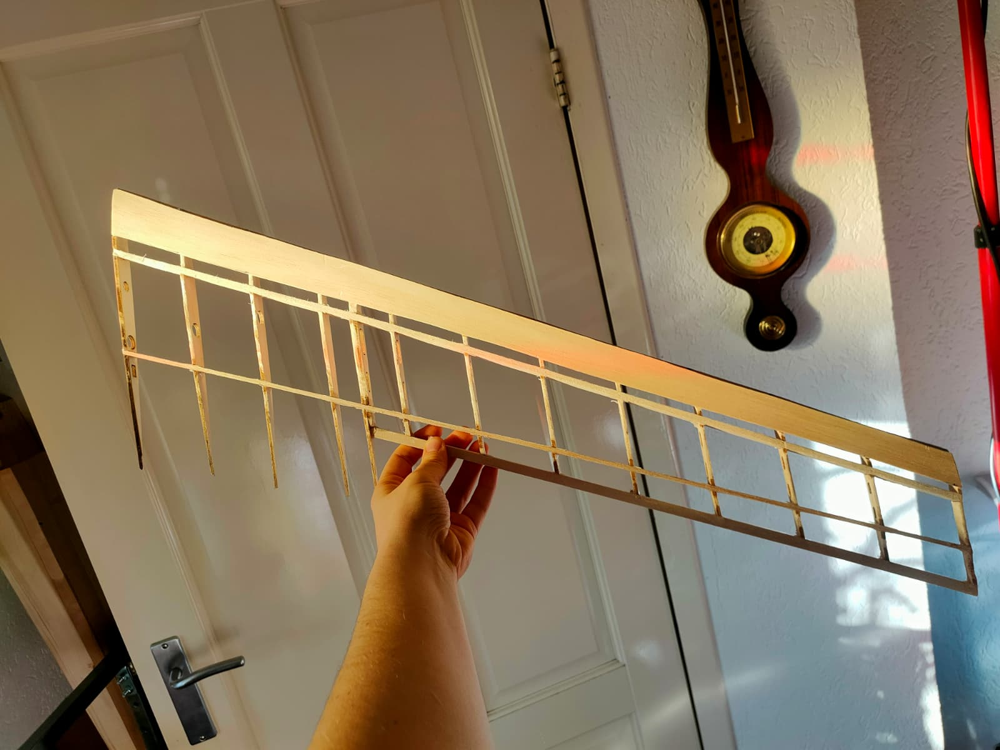
Wing
After sanding I could apply a sheet of bals on the leading edge so that the foiling would be easier afterwards.